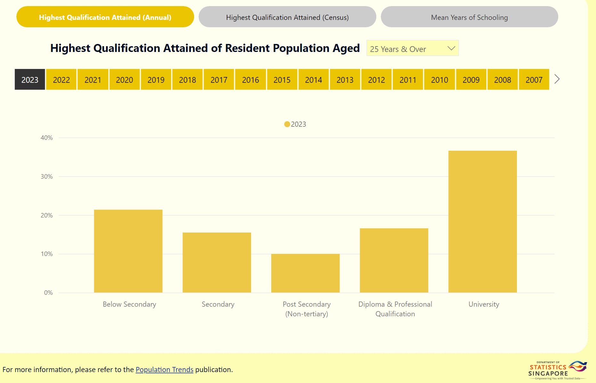
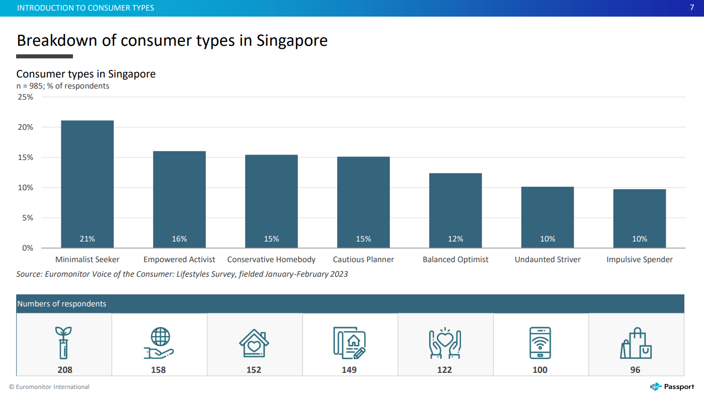
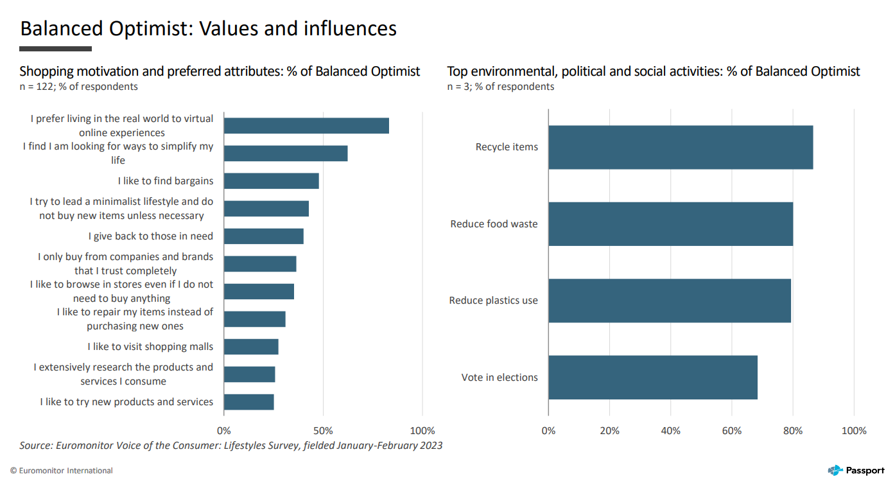
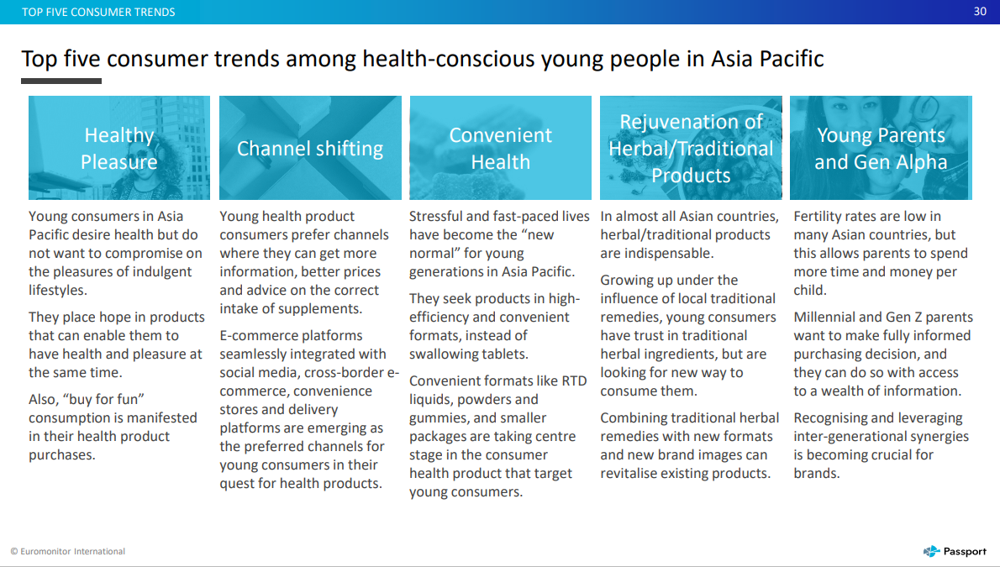
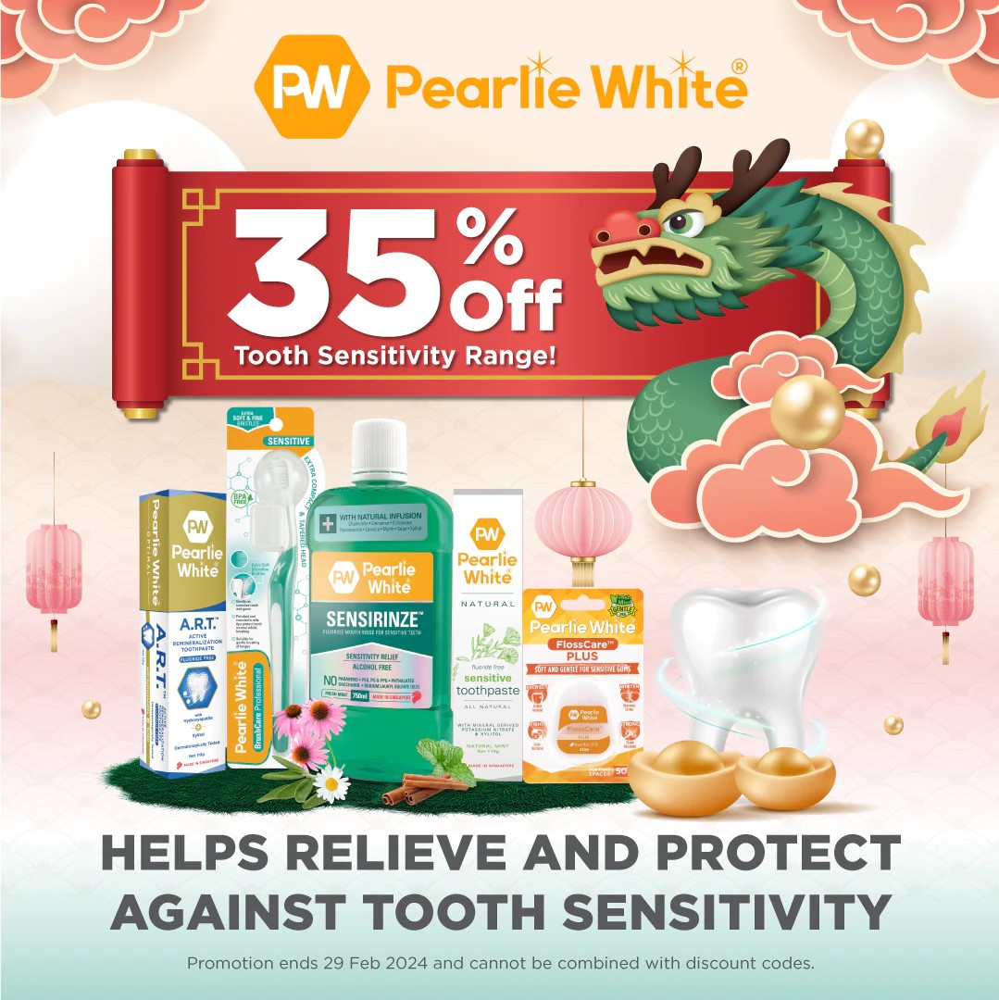
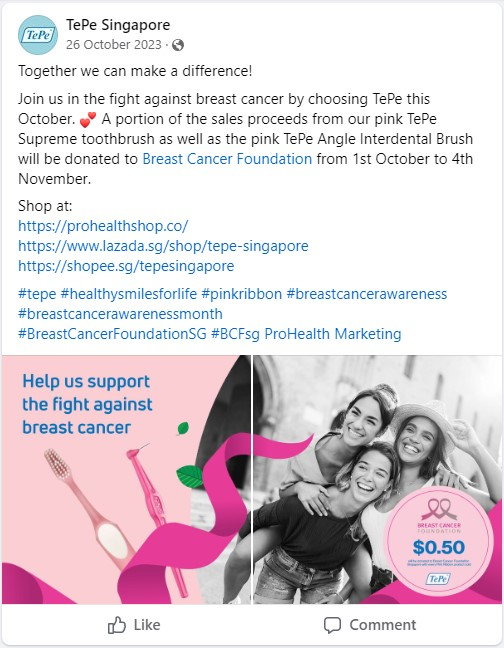

Marketing Environment
Customer Segments
The Singapore population when segmented by age shows that the majority of residents are young adults and middle aged, with the smallest segment being the elderly aged 90 and above at 23,730 and the biggest segment being those aged between 30-34 years old at 323,630.
When segmented by gender, the overall comparison shows a slight difference at each age group in favour of the female population whereby the female population aged 25 years and older were the majority when compared to the male population aged 25 years and older. Conversely, the male population aged 24 and younger was also slightly greater at each age group than the female population aged 24 and younger.
In terms of education, a majority of residents (36.6%) aged 25 and older have received university level education and attained a degree. Diploma holders and those with professional qualifications also make up 16.6% of the population which would lead to a total of 53.2% of Singapore’s population having received tertiary education.
The oral healthcare market targets young adults and the middle aged. Those aged 18-34 were 1.64 times more likely to engage in oral healthcare compared to the elderly aged 60 years or older. Married individuals and those with tertiary education have also been reported to have higher odds of oral healthcare utilisation compared to those with no formal education. Gender and income levels were also identified as contributing demographic variables whereby females and those with higher income were more likely to utilise oral healthcare.
Balanced Optimists are also targeted since they are persuaded by products that improve their personal health and wellbeing. They aim for a stable lifestyle and place importance on enjoying the present and planning for the future. It is also noted that 61% of the them look for ways to simplify their lives and this would indicate their preference for purchasing the interdental brush as a more convenient replacement to the traditional floss.
In conclusion, the most ideal target customer is a health conscious married young adult female with tertiary education and high income. It has also been reported that health conscious young adults value efficiency and convenience when purchasing products and this is due to the new normal of having stressful and fast paced lives. In terms of consumer behavior, the initial stage where consumers start to search for their ideal interdental brush exemplifies the Variety Seeking Behavior and once they have settled on the interdental brush that best suits their needs, the consumer behavior transitions to the Habitual Buying Behavior where they have little thought of making repeat purchases.
Competitor Strategies
One of Pearlie White's strategies is to continuously offer quality products to consumers. 25% of their expenditure is invested into research and development and every 3 years, they revisit and improve on the formulation of all its products in order to satisfy ever-changing consumer needs and to take advantage of technological advancements.
Aside from this, Pearlie White also capitalises on the fact that all of its products are manufactured in Singapore which is synonymous with quality due to the common perception that Singapore has very tight health and safety regulations as well as being known for having high standards.
Producing locally however has led to an increase to their products’ selling prices at an estimated 25% above their competitors’ selling price. This was a contributing factor in their plan to justify their higher prices by making it known to consumers of their high quality products and continuous improvements.
Pearlie White also uses short term techniques like sales & promotions to encourage trial and rebuy. Their website contains a lot of sales and discount codes, examples include festive period sales or discount codes given out to people who join their mailing list. They also offer new buyer discounts which encourage trialing of their products.
TePe is applying the greenwashing strategy as they promote their in-house manufacturing process that complements their commitment to sustainability. Uses of fossil-based materials in products and packaging are being increasingly replaced by renewable materials such as plant based materials.
TePe also makes use of solar energy during the summer to manufacture its products 24 hours a day. The company’s factory is covered with solar panels which make it possible for TePe to use 100% renewable energy supplemented by the power generated from the solar panels. Even the roof of their factory is home to 100,000 bees who help to pollinate their green roof concept and produce honey to be given as gifts to employees and visitors.
TePe also tries to upkeep their public image by using public relation tactics. The most recent example is their recent breast cancer campaign that donates a portion of their sales from Tepe Angle Interdental Brush to the Breast Cancer Foundation. This campaign was done in Singapore on Singapore’s platforms like Lazada and Shopee.